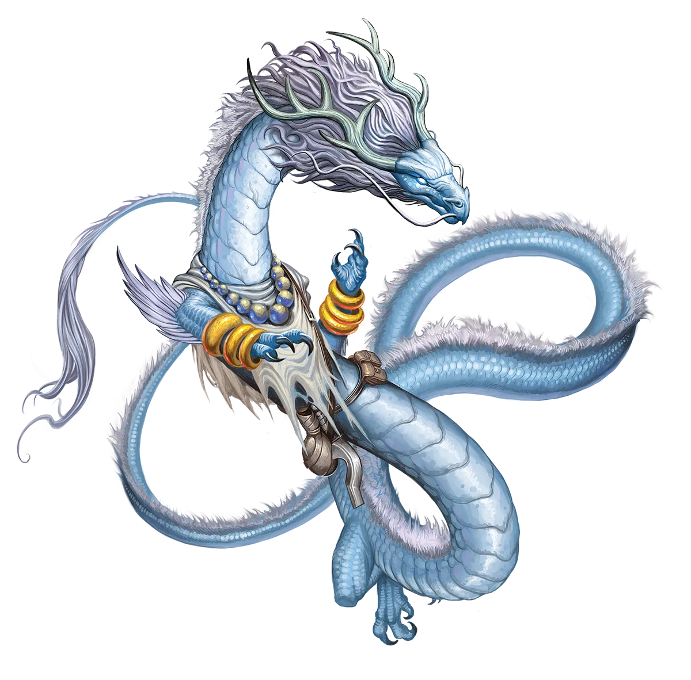

触及天空
天空龙坚信，任何真正有价值的事物都需要经历考验、旅途或磨难才能实现目标。这与他们遵循“古老智者居于山顶，你必须攀登才能获得其开悟”这一老套比喻的生活方式如出一辙。正如你所想象的，他们对永恒之光仪式如何融入其中有着尖锐的分歧。永恒天空龙认为仪式及其重置就是旅途，而传统派则认为它跳过了旅途。
天空龙 Sky Dragon |
|
|
天空龙共享一个丰富的宗教传统，但即使是在崇拜截然不同神�o的龙之中，对于永恒之光仪式是否符合他们共同的教义，也存在着激烈的辩论。至今尚无定论，而这种分歧导致了在偏远高山巢穴中召开多次神学峰会，在会议上，礼仪性争论可能会变得出人意料地激烈。 目前存在三种主要观点。略占多数的天空龙认为，他们的教义中没有任何内容支持或反对永恒之光仪式及其对龙的身体和生命所做的改变。一个稍微不那么突出的群体将该仪式视为禁忌，因为它会在未来导致更严重的传统违反行为。最小的派系，几乎完全由永恒天空龙组成，坚持认为他们的教义实际上鼓励龙进行永恒之光仪式，以便更好地为他人提供指导。不用说，这最后一组的成员最有可能与其他天空龙发生冲突。在神学峰会之外，这些信仰冲突往往导致一条天空龙要么主动退出对话，要么将另一条龙驱逐出自己的领空，从而有效地回避了对峙的需要。虽然这些策略对传统主义龙来说很有效，他们习惯于简单地将不尊重他们的龙从偏远的山巅宫廷中驱逐出去，但这常常导致他们与永恒的对手之间的裂痕不断扩大。这种回避不仅意味着龙从未真正揭开他们之间的伤口，而且永恒的龙能感觉到自己被当作传统派对待粗鲁或无礼的恳求者的方式，这是一种他们不会轻易原谅的轻慢。 永恒天空龙非常乐意与那些尊重他们的冒险团队分享他们的智慧。然而，不断烦扰他们的同伴会招致天空龙的愤怒，让龙别无选择，只能无视那个恼人的队员或干脆离开队伍。除此之外，天空龙喜欢几乎任何类型的冒险队伍，只要他们的道德信仰不与龙本身的信仰相悖。如果请求是以尊重的态度提出的，永恒天空龙觉得很难拒绝真正有需要的人的求助，即使提供的奖励不多。另一方面，一个令人讨厌的赞助人则面临着艰难的战斗，要说服天空龙承担一项任务，尽管他们可能会提供丰厚的报酬。在任何情况下，天空龙在做决定之前总是愿意听取盟友的意见。 天空龙通常选择宗教或精神性质的职业，特别是牧师、武僧或圣武士。他们通常侍奉掌管天气的神�o，尤其是那些为崇拜他们的凡人带来维持生命的雨水的神。那些摒弃宗教的龙可能会转而成为术士或法师，从狂风和震裂大地的雷暴中汲取奥术力量。 触及天空 天空龙坚信，任何真正有价值的事物都需要经历考验、旅途或磨难才能实现目标。这与他们遵循“古老智者居于山顶，你必须攀登才能获得其开悟”这一老套比喻的生活方式如出一辙。正如你所想象的，他们对永恒之光仪式如何融入其中有着尖锐的分歧。永恒天空龙认为仪式及其重置就是旅途，而传统派则认为它跳过了旅途。 天空龙特质 Sky Dragon Traits 你出身于一脉虔诚遵循宗教传统、乐于向落难者施以援手的天空龙世系。 |
  |